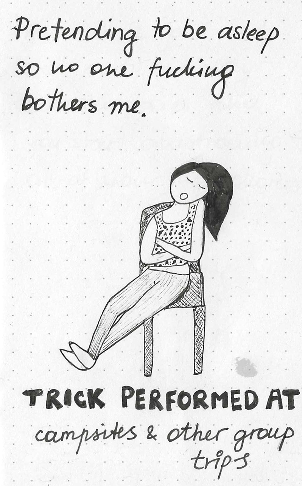

Napping in public
Sometimes you have to attend events, you do not wanna go to, but it's for your partner, or for your friend, or some other reason you have to be somewhere where you do not really wanna be.
For these specific moments I have developed a special trick. I sometimes find myself at camping trips or bbqs or group trips while I would have rather just stayed on my couch with a book.
Let me will walk you through it. It is simple. You find yourself a nice cozy spot and chill there for a while and once it is convenient and no one is looking, you close your eyes. You can even let out an occasional snore if you want to play it for real. Works 100% of the time, no one asks you any questions and doesn't even sit next to you. Highly recommend.

I can't say I am antisocial, but sometimes my internal social clock just does not align with the outside world. That is when I have to take extra measures in order to survive social gatherings.
More tips and tricks to follow.